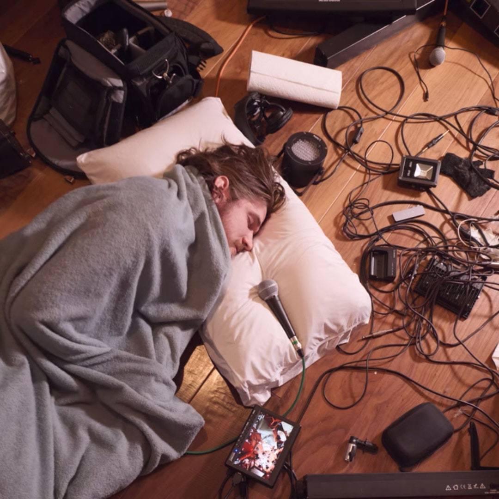

Lidiando con el fracaso
Y como lo estoy sobrellevando, más o menos....
Bienvenidos a la demo técnica del blog de la página web, todo está quedando muy piola por ahora. Una vez esté terminada se viene un cambio visual gigante, no va a parecerse para nada a lo que estoy haciendo ahora, pobre del pelotudo que tenga que arreglarlo todo después.
En fin, la idea de hoy es contar un poquito por lo que voy pasando y por lo que seguramente muchas otras personas estén atravesando en el momento también. Pero va a
ser breve, porque no tengo muchas ganas de escribir porque tengo otras cosas que hacer, pero sin embargo voy a estar escribiendo esto para no hacer lo que tengo que hacer.
Estoy escribiendo esto el 4 de octubre de 2021. Exactamente hace 4 años atrás me compré mi primera DSLR, una Nikon D3400

con la que arranqué a grabar videos "piolas" y a tomar fotos, porque si te compras una cámara de fotos para grabar video, obviamente vas a terminar sacando fotos. Es una locura pensar que 1460 días pasaron volando así nomás, y sin embargo uno sigue en el mismo punto de aprendizaje. Por un lado es muy esperanzador porque demuestra lo muchísimo que hay por aprender, no solo hablando de audiovisuales sino también de la vida misma. Pero también da un miedo gigante, por lo menos a mí, porque soy un ansioso de mierda que siente como el reloj del "éxito" le hace tic tac en la cabeza día y noche non-stop y me crece una angustia insoportable que me dan ganas de vomitar, literalmente. Es horrible sentirse apurado en la vida, porque tengo 20 años, y estoy sin estudios y sin trabajo, la definición estandar de "fracaso" según los estigmas del modelo de vida occidental-capitalista-contemporaneo. Y me hace sentir del reverendo carajo porque por un lado me siento inmensamente agradecido de lo que me estuvo pasando en estos últimos 4 años, y por otro siento una presión enorme a dar un paso en falso y que todo se vaya a la mierda. Me explico: por un lado tengo la suerte de vivir con mi familia, que quiero, tolero, y pueden sostener este experimento extraño que es tomar la educación por mi cuenta propia y transformarlo en trabajo fortuito, pero por otro lado tengo la presión gigante de no tener un sentido claro de la progresión, en relación a si estoy haciendo las cosas bien o mal porque como no hay nadie que corrija ni puntúe mi trabajo más allá de los méritos economicos de mi esfuerzo y trabajo, saber si estoy por el buen camino puede ser bastante obtuso cuando quiere. Lo que me lleva a mi otro punto: finanzas personales... Yay...
Hacer películas por cuenta propia puede ser caro, carísimo, y más cuando no podes centrar tus inversiones en un solo enfoque del filmmaking, sino que tenes
que estar pendiente de diversificarte en todas las ramas de la materia, porque desde afuera todo parece sencillo, pero las cámaras, lentes, luces, microfonos, grabadoras, stands,
soportes, interfaces, monitores, software, hardware... Todo ese equipo drena mucho de una sola billetera. De igual manera sigue siendo más barato que el costo total de una educación
universitaria, tanto privada como pública, porque una mudanza, alquiler, expensas, materiales de clase, transporte, y sustentos de vida no hacen que estudiar sea más barato, por lo menos
para mí.
Ahora un poco de transparencia: Si, yo vivo bajo la buena fortuna de tener una familia que cubre alimentos y techo. También hago trabajo de temporada durante 3-4 meses para tener
sustento economico durante el año, e invertir en equipo siempre que se puede. Pero acá es donde viene el miedo: ¿Cuanto tiempo más voy a estar así? Porque yo se que mi familia me
aguanta y banca en todas las situaciones del mundo, pero están preocupados de que esto no salga bien, y yo estoy cagado en las patas de que esto me salga mal. Además de que vivir
en un país con una economía que se cae en barranca para partirse en mil pedazos una vez cada 20 años no me hace gracia, porque nací en el 2001 y ahora tengo 20 años so it's coming once again.
Pero en fin, volviendo a los miedos a corto plazo: Todo esto del filmmaking no estaría siendo rentable a nivel economico y no se cuanto más pueda sostenerlo... Creo que también
por eso estoy aprendiendo desarrollo web... O sea, me encanta poder aprender sobre nuevos medios digitales donde la capacidad técnica y el desarrollo artisitco se encuentran, pero tambien
aprecio la alta demanda de empleos como este, que quizá me ayuden a salir adelante y mantener tiempo suficiente como para poder no solo estudiar filmmaking, sino también haciendo peliculas,
porque es lo que más deseo hacer en la vida, pero últimamente lo veo bastante complicado, o casi imposible a largo plazo.

En fin, debería terminar esto en una nota alegre para no deprimir a nadie. Ahí va: si tenes miedo de que las cosas no salgan como vos queres, no te preocupes tanto porque
las cosas nunca salen como uno quieren, las cosas son unas forras de mierda. Pero podemos hacer lo mejor con lo que tenemos encima y salir adelante de una u otra forma. A veces
el mundo no va a estar a nuestro favor y en vez de ser un desafío puede convertirse en una invitación a probar alternativas que nos mantengan a flote cuando las situaciones se ponen turbulentas.
Si llegaron hasta este cacho final realmente te lo agradezco de corazón, me alegra haber escrito una piecita tan personal para abrir la sección de los blogs, y espero que la página funcione bien.
Quiero disculparme por los errores de tipeo ya que escribí todo directamente en el código de la página y no tiene corrector de ortografía, solo de variables matemáticas.
Nos vemos en la próxima que tenga ganas de escribir.
Zuru.